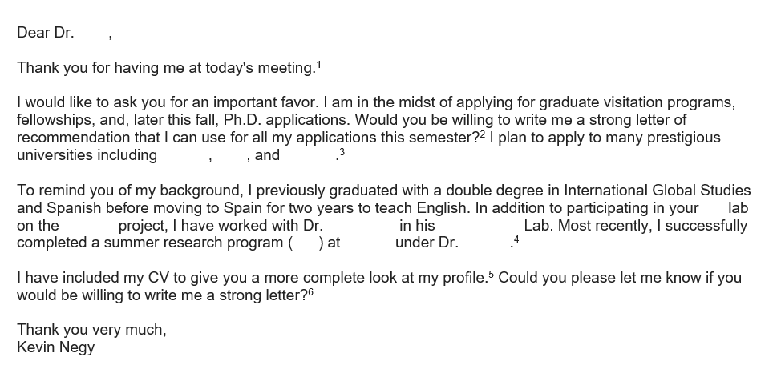

Kevin Alarcón Negy
Cornell University
Computer Science PhD student
Expected graduation: 2024
Contact Information:
Email: kevinnegy@cs.cornell.edu
Address: Office 407 Bill & Melinda Gates Hall
(107 Hoy Rd, Ithaca, NY 14853)
Guide to the PhD Application Process
How to Email Professors
There are many situations when it is necessary to email professors:
• Asking for letters of recommendation
• Asking to get involved in research
• Asking potential advisers at other universities to meet with you
• Post-visit thank you emails
• Asking a professor to modify an existing letter of recommendation
As simple as writing an email sounds, I have learned that there is a subtle strategy that comes with crafting emails to professors. It involves carefully choosing words and phrases in a diplomatic way. These emails are mini-persuasive essays. I have included an email that I sent to a professor asking for a letter of recommendation to use as a way to discuss the components of a successful email. I have removed any personal information about professors for their privacy.

Start with "Dear Dr. ______," or "Hello Dr. _____," unless they have told you to call them something else.
1) Since I have already met this professor, this sentence serves as a transition and a friendly greeting. Other appropriate greeting sentences include, "Hope you had a nice winter break," or "Hope you are doing well." If I had not introduced myself, I would have started with "My name is Kevin Negy. I am (description of who I am)."
2) I am immediately getting to the point: I have a favor to ask. Always try to get to the point quickly.
3) I make the request. Phrasing requests directly as questions with question marks sound more confident and make it more likely that a professor will respond. Compare my request to a more timid, indirect question: "I was hoping you would write me a letter of recommendation..."
4) I provide extra details to help persuade the professor.
5) I next include a brief highlight reel of relevant information to help the professor decide.
6) I include relevant attachments with more information that can help with the request.
7) I reiterate my request in direct question format.
Finish with a polite closing phrase and then your name.
Keys to remember when emailing professors no matter what the request:
- Get to the point early.
- Be concise.
- Be polite.
- Ask direct questions.
- Break up emails into short paragraphs.
Updated as of January 2019.